Tolkien: A Look Behind the Lord of the Rings
Lin Carter
034527539X
Lin Carter's joyous 1969 exploration of Tolkien's classic trilogy and the glorious tradition from which it grew.
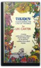
Tolkien's World from A to Z: The Complete Guide to Middle-Earth
Robert Foster
0345449762
For the millions who have already ventured to Middle-earth, and for the countless others who have yet to embark on the journey–here is the one indispensable A-to-Z guide that brings Tolkien’s universe to life.EVERY CHARACTER
From Adaldrida Brandybuck to Zaragamba–every Hobbit, Elf, Dwarf, Man, Orc, or other resident of Middle-earth is vividly described and accurately located in proper place and time.
EVERY PLACE
Colorfully detailed descriptions of geographical entries allow you to pick up the action anywhere in Middle-earth and follow it through all five volumes.
EVERY THING
From stars and streams to food and flora, everything found in Middle-earth is alphabetically listed and, when necessary, cross-referenced.
HERE IS TRULY A MASTER KEY
TO TOLKIEN’S MIDDLE-EARTH

The Two Towers Ace Science Fiction Classic A-5 Complete & Unabridged
J.R.R.Tolkien
B0085GJPC0
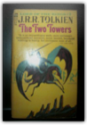
The Languages of Tolkien's Middle-Earth
Ruth S. Noel
0395291305
This is the book on all of Tolkien's invented languages, spoken by hobbits, elves, and men of Middle-earth — a dicitonary of fourteen languages, an English-Elvish glossary, all the runes and alphabets, and material on Tolkien the linguist.

The Fellowship of the Ring
J. R. R. Tolkien
B002H2NDMQ
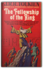
The Tolkien Reader
J. R. R. Tolkien
B00A26JUWG

The Lays of Beleriand
J. R. R. Tolkien, Christopher Tolkien
0345388186
"The power of Tolkien's central characters . . . shines through." Library Journal.A treasure trove of lore for old and new friends of Middle-earth. Enter now, reader, and learn of the hero of the Lay of Leithian. Hear as well of the early years of Turin the Tall, as he journeys through darkness on his quest to find his father. Read of his rescue by Beleg the Brave, and of the dark destiny that haunts their friendship! Only the genius of Tolkien could create a fantasy more real than reality, a reality more fantastic than fantasy!
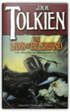
The Letters of J.R.R. Tolkien
J. R. R. Tolkien, Christopher Tolkien, Humphrey Carpenter
0618056998
'...If you wanted to go on from the end of The Hobbit I think the ring would be your inevitable choice as the link. If then you wanted a large tale, the Ring would at once acquire a capital letter; and the Dark Lord would immediately appear. As he did, unasked, on the hearth at Bag End as soon as I came to that point. So the essential Quest started at once. But I met a lot of things along the way that astonished me. Tom Bombadil I knew already; but I had never been to Bree. Strider sitting in the corner of the inn was a shock, and I had no more idea who he was than Frodo did. The Mines of Moria had been a mere name; and of Lothlorien no word had reached my mortal ears till I came there.' — J.R.R. Tolkien to W.H. Auden, June 7, 1955J.R.R. Tolkien, cherished author of The Hobbit, The Lord of the Rings, and The Silmarillion, was one of the twentieth century's most prolific letter writers. Over the years he wrote a mass of letters — to his publishers, his family, to friends, and to fans of his books — which record the history and composition of his works and his reaction to subsequent events.
By turns thoughtful, impish, scholarly, impassioned, playful, vigorous, and gentle, Tolkien poured his heart and mind into a great stream of correspondence to intimate friends and unknown admirers all over the world. From this collection one sees a mind of immense complexity and many layers — artistic, religious, charmingly eccentric, sentimental, and ultimately brilliant.
Now newly expanded with a detailed index, this collection provides an invaluable record that sheds much light on Tolkien's creative genius, his thoughts and feelings about his own work, and the evolution of his grand design for the creation of a whole new world — Middle-earth.

J.R.R. Tolkien, The Hobbit First Printing August 1965 with Lion
J.R.R. Tolkien
B0095ZRNKG
J.R.R. Tolkien, The Hobbit 1965 with Lion. Currently listed on another website for $261.95. This is a Ballantine first edition produced to go with the 1965 first official paperback edition of Lord of the Rings, but cover artist Barbara Remington mistakenly included a lion and emus which Professor Tolkien insisted be removed immediately because there is no lion or emus in the Hobbit (and he probably did not want the Hobbit confused with the Lion, the Witch, and the Wardrobe). The lion was airbrushed out of subsequent editions, making this version quite rare (a seller on another website is asking $261.95).

The Two Towers
J.R.R. Tolkien
B001MPMZAA
Different cover. 1st edition, Ballintine, 106 printing. Excellent condition. No marks, no spine creases. 100% Satisfaction guaranteed.

THE FELLOWSHIP OF THE RING - PART ONE
J.R.R. Tolkien
B000RAEO7S

The Hobbit
J.R.R. Tolkien
0395177111
This deluxe collector's edition of Tolkien's modern classic is boxed and bound in green leatherette with gold and red foil rune stamping on the spine and cover. The text pages are printed in black with green accents. It includes five full page illustrations in full color and many more in two color in addition to Thror's map — all prepared by the author. J.R.R. Tolkien's own description for the original edition: "If you care for journeys there and back, out of the comfortable Western world, over the edge of the Wild, and home again, and can take an interest in a humble hero (blessed with a little wisdom and a little courage and considerable good luck), here is a record of such a journey and such a traveler. The period is the ancient time between the age of Faerie and the dominion of men, when the famous forest of Mirkwood was still standing, and the mountains were full of danger. In following the path of this humble adventurer, you will learn by the way (as he did) — if you do not already know all about these things — much about trolls, goblins, dwarves, and elves, and get some glimpses into the history and politics of a neglected but important period. For Mr. Bilbo Baggins visited various notable persons; conversed with the dragon, Smaug the Magnificent; and was present, rather unwillingly, at the Battle of the Five Armies. This is all the more remarkable, since he was a hobbit. Hobbits have hitherto been passed over in history and legend, perhaps because they as a rule preferred comfort to excitement. But this account, based on his personal memoirs, of the one exciting year in the otherwise quiet life of Mr. Baggins will give you a fair idea of the estimable people now (it is said) becoming rather rare. They do not like noise."
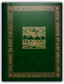
The Two Towers
J.R.R. Tolkien
0345339711
The prequel to The Lord of the Rings—The Hobbit—is now a major motion picture directed by Peter JacksonTHE GREATEST FANTASY EPIC OF OUR TIME
The Fellowship is scattered. Some are bracing hopelessly for war against the ancient evil of Sauron. Some are contending with the treachery of the wizard Saruman. Only Frodo and Sam are left to take the accursed One Ring, ruler of all the Rings of Power, to be destroyed in Mordor, the dark realm where Sauron is supreme. Their guide is Gollum, deceitful and lust-filled, slave to the corruption of the Ring.
Thus continues the bestselling epic that began in The Fellowship of the Ring, and which reaches its magnificent climax in The Return of the King.
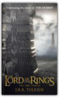
Unfinished Tales: The Lost Lore of Middle-earth
J.R.R. Tolkien
0345357116
An extraordinary discovery is waiting for you on these pages. Mythic lore and forgotten legends unearthed by Christopher Tolkien from his father's archives unveil never-before-told stories of the three ages of ancient Middle-earth.

The Lord of the Rings
J.R.R. Tolkien
0395595118
Celebrating the birth of J.R.R. Tolkien, this centenary edition of the classic volume is illustrated with fifty specially commissioned paintings by an artist whose vision matches Tolkien's own. One Ring to rule them all, One Ring to find them, One Ring to bring them all and in the darkness bind them. In ancient times the Rings of Power were crafted by the Elven-smiths, and Sauron, The Dark Lord, forged the One Ring, filling it with his own power so that he could rule all others. But the One Ring was taken from him, and though he sought it throughout Middle-earth, it remained lost to him. After many ages it fell, by chance, into the hands of the hobbit, Bilbo Baggins. From his fastness in the Dark Tower of Mordor, Sauron's power spread far and wide. He gathered all the Great Rings to him, but ever he searched far and wide for the One Ring that would complete his dominion. On his eleventy-first birthday Bilbo disappeared, bequeathing to his young cousin Frodo the Ruling Ring and a perilous quest —- to journey across Middle-earth, deep into the shadow of the Dark Lord, and destroy the Ring by casting it into the Cracks of Doom. The Lord of the Rings tells of the great quest undertaken by Frodo and the Fellowship of the Ring: Gandalf the Wizard, Merry, Pippin, and Sam, Gimli the Dwarf, Legolas the Elf, Boromir of Gondor, and a tall, mysterious stranger called Strider.

The Book of Lost Tales, Part Two
J.R.R. Tolkien
034537522X
This second part of THE BOOK OF LOST TALES includes the tale of Beneren and Luthien, Turin and the Dragon, Necklace of the Dwarves, and the Fall of Gondolin. Each tale is followed by a commentary in the form of a short essay, together with the texts of associated poems, as well as information on names and vocabulary in the earliest Elvish languages.

The Lord of the Rings
J.R.R. Tolkien
0618129022
In ancient times the Rings of Power were crafted by the Elven-smiths, and Sauron, The Dark Lord, forged the One Ring, filling it with his own power so that he could rule all others. But the One Ring was taken from him, and though he sought it throughout Middle-earth, it remained lost to him. After many ages it fell, by chance, into the hands of the hobbit, Bilbo Baggins.From his fastness in the Dark Tower of Mordor, Sauron's power spread far and wide. He gathered all the Great Rings to him, but ever he searched far and wide for the One Ring that would complete his dominion.
On his eleventy-first birthday Bilbo disappeared, bequeathing to his young cousin Frodo the Ruling Ring and a perilous quest —- to journey across Middle-earth, deep into the shadow of the Dark Lord, and destroy the Ring by casting it into the Cracks of Doom. THE LORD OF THE RINGS tells of the great quest undertaken by Frodo and the Fellowship of the Ring: Gandalf the Wizard, Merry, Pippin, and Sam, Gimli the Dwarf, Legolas the Elf, Boromir of Gondor, and a tall, mysterious stranger called Strider.
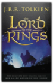
Letters From Father Christmas
J.R.R. Tolkien, Baillie Tolkien
0395741327
This sumptuous gift book originates from the beautiful letters and drawings that J.R.R. Tolkien, in the guise of Father Christmas, sent to his children over a twenty-year period. Including previously unpublished illustrations, facsimiles, and text, the letters tell the story of life at the North Pole, the mischievous North Polar Bear, the helpful Ilbereth the elf, and the adventures they share between Christmases. As well as beautifully reproduced pictures, the book features ten envelopes containing ten pull-out letters and pictures for readers to read, hold, and enjoy. The pull-outs are facsimile extracts of the original letters, with a simple "translation" on the back to help those who have trouble deciphering Father Christmas's shaky handwriting. An ideal Christmas gift, perfect for reading aloud to children yet collectible for adults, this enchanting book will bring Father Christmas to a whole new generation of readers.
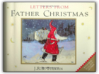
THE SILMARILLION
J.R.R. Tolkien, Christopher Tolkien
0345272552
The Silmarillion tells of the Elder Days, of the First Age of Tolkien's World, when Morgoth, the first Dark Lord, dwelt in Middle Earth, and the High Elves made war upon them for the recovery of the Silmarils, the jewels containing the pure light of Valinor. It is to this ancient drama that the characters in The Lord of the Rings so often look back to.Sit at the feet of the most beloved storyteller of the 20th century and hear how the world came to be. The Silmarillion is told here in a brilliantly faceted audio production, with all the glory of the First Age itself. Dazzlingly performed by Martin Shaw, it sparkles with the magic of the dawn of time—when Elves and Men roamed a world set spinning through space by the haunting music of supernatural choirs. Slip through the shadows and you, too, may catch the whisper of harp-song on the winds of the high air above the mists of the world.
This exclusive audio boxed set of Tolkien's elegant masterpiece is one that will delight fans young and old. It is an extraordinary keepsake to be treasured and listened to again and again.
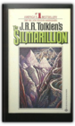
The Shaping of Middle-Earth: The Quenta, the Ambarkanta and the Annals
J.R.R. Tolkien, Christopher Tolkien
0395425018
This is the fourth volume of The History of Middle-earth, edited by Christopher Tolkien, the first two comprising The Book of Lost Tales Parts One and Two, and the third The Lays of Beleriand.It has been given the title The Shaping of Middle-earth because the writings it includes display a great advance in the chronological and geographical structure of the legends of Middle-earth and Valinor. The hitherto wholly unknown "Ambarkanta," or Shape of the World, is the only account ever given of the nature of the imagined Universe, and it is accompanied by diagrams and maps of the world before and after the cataclysms of the War of the Gods and the Downfall of Numenor. The first map of Beleriand, in the North-west of Middle-earth, is also reproduced and discussed. In the "Annals of Valinor" and the "Annals of Beleriand" the chronology of the First Age is given shape; and with these are given the fragments of the translations into Anglo-Saxon made by Aelfwine, the Englishman who voyaged into the True West and came to Tol Eressea, the Lonely Isle, where he learned the ancient history of Elves and Men.
Also included are the original "Silmarillion," written in 1926, from which all the later development proceeded, and the "Quenta Noldorinwa" of 1930, the only version of the myths and legends of the First Age that J.R.R. Tolkien completed to their end. As Christopher Tolkien continues editing the unpublished papers that form the bedrock from which The Lord of the Rings and The Silmarillion were quarried, the vastness of his father's accomplishment becomes even more extraordinary.

The Return of the Shadow: The History of The Lord of the Rings, Part One
J.R.R. Tolkien, Christopher Tolkien
0395498635
In this sixth volume of The History of Middle-earth the story reaches The Lord of the Rings. In The Return of the Shadow (an abandoned title for the first volume) Christopher Tolkien describes, with full citation of the earliest notes, outline plans, and narrative drafts, the intricate evolution of The Fellowship of the Ring and the gradual emergence of the conceptions that transformed what J.R.R. Tolkien for long believed would be a far shorter book, 'a sequel to The Hobbit'. The enlargement of Bilbo's 'magic ring' into the supremely potent and dangerous Ruling Ring of the Dark Lord is traced and the precise moment is seen when, in an astonishing and unforeseen leap in the earliest narrative, a Black Rider first rode into the Shire, his significance still unknown. The character of the hobbit called Trotter (afterwards Strider or Aragorn) is developed while his indentity remains an absolute puzzle, and the suspicion only very slowly becomes certainty that he must after all be a Man. The hobbits, Frodo's companions, undergo intricate permutations of name and personality, and other major figures appear in strange modes: a sinister Treebeard, in league with the Enemy, a ferocious and malevolent Farmer Maggot.The story in this book ends at the point where J.R.R. Tolkien halted in the story for a long time, as the Company of the Ring, still lacking Legolas and Gimli, stood before the tomb of Balin in the Mines of Moria. The Return of the Shadow is illustrated with reproductions of the first maps and notable pages from the earliest manuscripts.
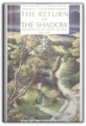
Treason of Isengard: The History of The Lord of the Rings, Part Two
J.R.R. Tolkien, Christopher Tolkien
0395515629
The Treason of Isengard is the seventh volume in Christopher Tolkien's History of Middle-earth and the second in his account of the evolution of The Lord of the Rings. This book follows the long halt in the darkness of the Mines of Moria (which ended The Return of the Shadow) and traces the tale into new lands south and east of the Misty Mountains. Tolkien introduces us to Lothlorien, land of the elves, where we meet the Ents, the Riders of Rohan, and Saruman the White in the fortress of Isengard. In brief outlines and penciled drafts dashed down on scraps of paper are the first entry of Galadriel; the earliest ides of the history of Gondor; and the original meeting of Aragorn with Eowyn, its significance destined to be wholly transformed. Conceptions of what lay ahead dissolve as the story takes its own paths, as in the account of the capture of Frodo and his rescue by Sam Gamgee from Minas Morgul, written long before J.R.R. Tolkien actually reached that point in the writing of The Lord of the Rings. A chief feature of the book is a full account of the original Map, with drawings of successive phases, which was long the basis and accompaniment of the emerging geography of Middle-earth. An appendix describes the Runic alphabets of the time, with illustrations of the forms and an analysis of the Runes used in the Book of Mazarbul found beside Balin's tomb in Moria.

The Book of Lost Tales 1
J.R.R. Tolkien, Christopher Tolkien
0345375211
THE BOOK OF LOST TALES, I, stands at the beginning of the entire conception of Middle-earth and Valinor. Here is the whole, glorious history of Middle-earth that J.R.R. Tolkien brought to mythic and dramatic life with his classic fantasy novels of the Ring Cycle.

The War of the Jewels: The Later Silmarillion, Part Two
J.R.R. Tolkien, Christopher Tolkien
0395710413
In volumes ten and eleven of The History of Middle-earth, Christopher Tolkien recounts from the original texts the evolution of his father's work on The Silmarillion, the legendary history of the Elder Days or First Age, from the completion of the Lord of the Rings in 1949 until J.R.R. Tolkien's death. In volume ten, Morgoth's Ring, the narrative was taken only as far as the natural dividing point in the work, when Morgoth destroyed the Trees of Light and fled from Valinor bearing the stolen Silmarils. In The War of the Jewels, the story returns to Middle-earth and the ruinous conflict of the High Elves and the Men who were their allies with the power of the Dark Lord. With the publication in this book of all of J.R.R. Tolkien's later narrative writing concerned with the last centuries of the First Age, the long history of The Silmarillion, from its beginnings in The Book of Lost Tales, is completed; the enigmatic state of the work at his death can now be understood. A chief element in The War of the Jewels is a major story of Middle-earth, now published for the first time - a continuation of the great "saga" of Turin Turambar and his sister Nienor, the children of Hurin the Steadfast. This is the tale of the disaster that overtook the forest people of Brethil when Hurin came among them after his release from long years of captivity in Angband, the fortress of Morgoth. The uncompleted text of the Grey Annals, the primary record of the War of the Jewels, is given in full; the geography of Beleriand is studied in detail, with redrawings of the final state of the map; and a long essay on the names and relations of all the peoples of Middle-earth shows more clearly than any writing yet published the close connection between the language and history in Tolkien's world. The text also provides new information, including some knowledge of the divine powers, the Valar.
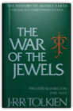
The Peoples of Middle-Earth
J.R.R. Tolkien, Christopher Tolkien
0395827604
Throughout this vast and intricate mythology, says Publishers Weekly, "one marvels anew at the depth, breadth, and persistence of J.R.R. Tolkien's labor. No one sympathetic to his aims, the invention of a secondary universe, will want to miss this chance to be present at the creation." In this capstone to that creation, we find the chronology of Middle-earth's later Ages, the Hobbit genealogies, and the Western language or Common Speech. These early essays show that Tolkien's fertile imagination was at work on Middle-earth's Second and Third Ages long before he explored them in the Appendices to The Lord of the Rings . Here too are valuable writings from Tolkien's last years: " The New Shadow," in Gondor of the Fourth Age, and" Tal-elmar," the tale of the coming of the Nsmen-rean ships.

The Silmarillion
J.R.R. Tolkien, Christopher Tolkien
0395939461
The background to the entire Lord of the Rings epic, and the world of middle-earth. The Silmarillion is Tolkien's first book and his last, the core of his imaginative work that underlies all his writings about Middle-earth. Here are the legends of the Elder Days, the central stories that give meaning to the events of The Lord of the Rings and The Hobbit. Tolkien began The Silmarillion in 1917 and worked on it, changed it, and continued it throughout his life. Edited by his son, Christopher Tolkien, the book finally appeared four years after the author's death, in 1977. The three Silmarils were jewels created by Feonor, the most gifted of the Elves, and within them gleamed the light of the Two Trees of Valinor. But they were stolen by Morgoth, the first Dark Lord, setting off the major war of the First Age. The Silmarillion includes several other works besides the main story: Ainulindale, the myth of Creation; Valaquenta, on the nature and power of the gods; Allakabeth, recounting the downfall of Numenor; and "Of the Rings of Power and the third Age," the link to The Lord of the Rings. As Christopher Tolkien describes it: "The entire history is set forth from the Music of the Ainur in which the world began to the passing of the ringbearers from the Havens of Mithlond at the end of the Third Age." Now illustrated for the first time with original paintings by the renowned artist Ted Nasmith, this gift edition is a companion to the illustrated editions of The Hobbit and the Lord of the Rings trilogy.

The Children of Hurin
J.R.R. Tolkien, Christopher Tolkien
0618894640
The 'Great Tale' of The Children of HÚrin, set during the legendary time before The Lord of the Rings. Morgoth, the first Dark Lord, dwells in the vast fortress of Angband in the North; and within the shadow of the fear of Angband, and the war waged by Morgoth against the Elves, the fates of TÚrin and his sister NiËnor will be tragically entwined. Their brief and passionate lives are dominated by the elemental hatred that Morgoth bears them as the children of HÚrin, the man who dared to defy him to his face. Against them Morgoth sends his most formidable servant, Glaurung, a powerful spirit in the form of a huge wingless dragon of fire. Sardonic and mocking, Glaurung manipulates the fates of TÚrin and NiËnor by lies of diabolic cunning and guile, in an attempt to fulfil the curse of Morgoth.
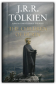
The Legend of Sigurd and Gudrun
J.R.R. Tolkien, Christopher Tolkien
0547273428
The Legend of Sigurd and Gudrún is a previously unpublished work by J.R.R. Tolkien, written while Tolkien was Professor of Anglo-Saxon at Oxford during the 1920s and 30s, before he wrote The Hobbit and The Lord of the Rings. It makes available for the first time Tolkien’s extensive retelling in English narrative verse of the epic Norse tales of Sigurd the Völsung and The Fall of the Niflungs. It includes an introduction by J.R.R. Tolkien, drawn from one of his own lectures on Norse literature, with commentary and notes on the poems by Christopher Tolkien.